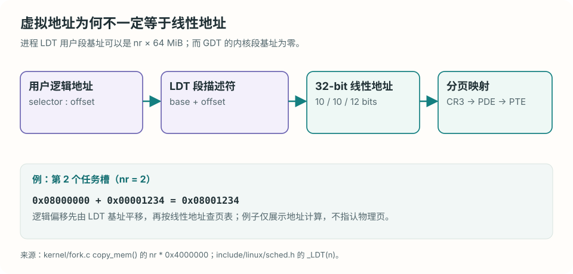
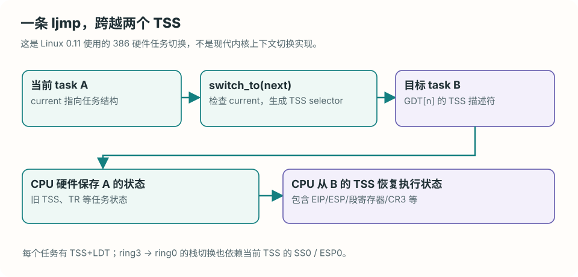

x86 保护模式：段、页与 TSS 怎样共同工作
从选择子的位拆解出发，把用户段偏移转换成线性地址，经过页表获取物理页，并解释 0.11 为何依赖硬件任务切换。
段选择子 · LDT / TSS / 页表为什么用户指针不能直接当物理地址？
程序看到的是一个逻辑地址。例如用户代码用 DS:0x1234 访问数据，处理器首先检查选择子所引用的描述符，通过段基址 + 偏移形成线性地址，然后再交给分页部件。在 Linux 0.11 中，进程的用户 LDT 段基址可以不同，所以“所有段基址都是零”并不成立。
这章主要研究三张表：GDT 保存内核段和各任务 TSS/LDT 描述符；LDT 描述具体任务的用户代码/数据段；页目录与页表 把线性地址映射到物理页面。三者互相衔接，却不能互相替代。

从 0x0f、0x17 精确拆解选择子
16 位段选择子可以拆成 index（高 13 位）、TI（位 2）、RPL（低 2 位）。TI=0 使用 GDT；TI=1 使用当前 LDTR 指向的 LDT。RPL 是请求特权级，不能单凭 RPL 就断言当前 CPU 的 CPL。
| 选择子 | index | TI | RPL | 在本版本的典型用途 |
|---|---|---|---|---|
0x08 | 1 | 0 | 0 | 内核代码段 |
0x10 | 2 | 0 | 0 | 内核数据段 |
0x0f | 1 | 1 | 3 | 当前任务的用户代码段 |
0x17 | 2 | 1 | 3 | 当前任务的用户数据/堆栈段 |
selector = 0x17
index = selector >> 3 # 2
ti = (selector >> 2) & 1 # 1，选择 LDT
rpl = selector & 3 # 3，用户请求特权级为什么 0x0f 不是 GDT 第 1 项？（点击展开解析）
0x0f = 0000 1111b。低 2 位为 3，位 2 是 1，所以 TI=1；index=0x0f>>3=1。它引用当前任务的 LDT 第 1 项。
GDT 的内核段与 LDT 的用户段
sched.h 定义了每任务的 ldt[3]。第 0 项为空描述符；第 1、2 项分别为用户代码段和用户数据段。fork.c 中 copy_mem 在复制进程时，计算新的用户段基址：
new_data_base = new_code_base = nr * 0x4000000;
set_base(p->ldt[1],new_code_base);
set_base(p->ldt[2],new_data_base);0x4000000 是 64 MiB。假设新任务槽 nr=2，用户逻辑偏移 0x1234，则线性地址为 0x08001234。**最终物理地址尚未确定**：必须依据 CR3、页目录、页表以及页面 present 状态继续翻译。进程槽只是虚拟线性空间布局的来源，不等价于物理内存分配结果。
32 位两级分页怎样工作
当 CR0.PG=1 时，处理器把 32 位线性地址分成页目录索引 10 位、页表索引 10 位、页内偏移 12 位。每页 4096 字节，页目录和页表各有 1024 个表项；CR3 提供页目录物理基址。初始 head.s 的 0–16 MiB 映射适用于启动，但后续通过 copy_page_tables 和缺页处理给用户任务构建另一套线性地址布局。
linear = 0x08001234
directory_index = (linear >> 22) & 0x3ff # 32
table_index = (linear >> 12) & 0x3ff # 1
offset = linear & 0xfff # 0x234
print(directory_index, table_index, hex(offset))如果 PDE 或 PTE 的 present 位未设置，CPU 触发 #PF（缺页异常），并把故障线性地址放到 CR2。Linux 0.11 的实际处理由 mm/page.s 进入 C 层页故障例程；这和普通硬件 IRQ 不同。
上述线性地址能直接推出最终物理地址吗？（点击展开解析）
不能。计算出的页目录索引 32、页表索引 1 和页内偏移 0x234 仅确定了查表路径；还必须读取 PDE、PTE 的实际内容，检查权限和 present 位，才能计算物理页框地址。
特权级与门表：谁能跨到 ring 0？
当前特权级（CPL）来自当前执行代码段，用户态通常为 3，内核态通常为 0。处理器结合 CPL、描述符 DPL、选择子 RPL 检查段访问规则。通过 IDT 显式触发的 int 0x80 则由门描述符的 DPL=3 允许用户态进入；普通 IRQ 的 interrupt gate 不意味着用户程序可以任意软件调用该门。
当从 CPL 3 转向 CPL 0 时，CPU 根据当前 TSS 的 SS0 与 ESP0 选择内核栈，保存用户态的 SS、ESP、EFLAGS、CS、EIP 等信息，然后跳到中断/陷阱入口。若未发生特权级改变，压栈细节有所不同，不能照抄用户态切换栈的示意。
grep -n 'move_to_user_mode\|set_system_gate' include/asm/system.h
grep -n 'struct tss_struct\|esp0\|ss0' include/linux/sched.h
grep -n 'set_system_gate(0x80' kernel/sched.c预期在 asm/system.h 看到 _set_gate 的 DPL 参数差异，在 sched.c 看到系统调用入口注册，而不是拿现代 SYSCALL/SYSRET 指令解释 0.11。
TSS：0.11 真的用硬件任务切换
在 Linux 0.11 中，switch_to(n) 是定义于 include/linux/sched.h 的内联汇编宏。它先确认目标任务与 current 不同，构造目标 TSS 选择子、更新当前任务指针，然后通过 ljmp 触发 386 的硬件任务切换。

处理器在任务切换时更新 TR、旧任务 TSS 和目标任务上下文；TSS 包含 EIP、EFLAGS、ESP、CR3、段寄存器等。用户态进入内核态的 TSS 栈切换和任务 A 切换为任务 B 的 TSS 切换是不同事件，虽然它们都借助 TSS。0.11 的任务使用同一初始化页目录基址的情况也不意味着“每次任务切换都会切到一个完全不同的页目录”。
一分钟做三个确定性计算
python3 - <<'PY'
for s in (0x08, 0x10, 0x0f, 0x17):
print(hex(s), 'index=',s>>3,'TI=',(s>>2)&1,'RPL=',s&3)
for slot in (0,1,2):
print('slot',slot,'linear_base',hex(slot*0x4000000))
PY预测：0x0f 是 LDT index 1 / RPL 3，0x17 是 LDT index 2 / RPL 3；任务槽 0、1、2 的线性基址分别为 0、0x4000000、0x8000000。这个演示验证地址算术，不会模拟处理器特权检查，也不会证明某个页表映射有效。
原始源码锚点
- include/linux/sched.h：TSS 字段、LDT、选择子宏和
switch_to。 - kernel/fork.c：
copy_mem将新任务的用户段基址设为任务槽 ×64MiB。 - include/asm/system.h：IDT 门类型与特权级、进入用户态的
iret。 - boot/head.s：初始页目录、GDT、IDT。
- mm/memory.c：页表复制、缺页与实际物理页管理。
下一章用这套模型观察一次中断：CPU 如何从 IDT 找到入口，保存什么，何时交回控制权？